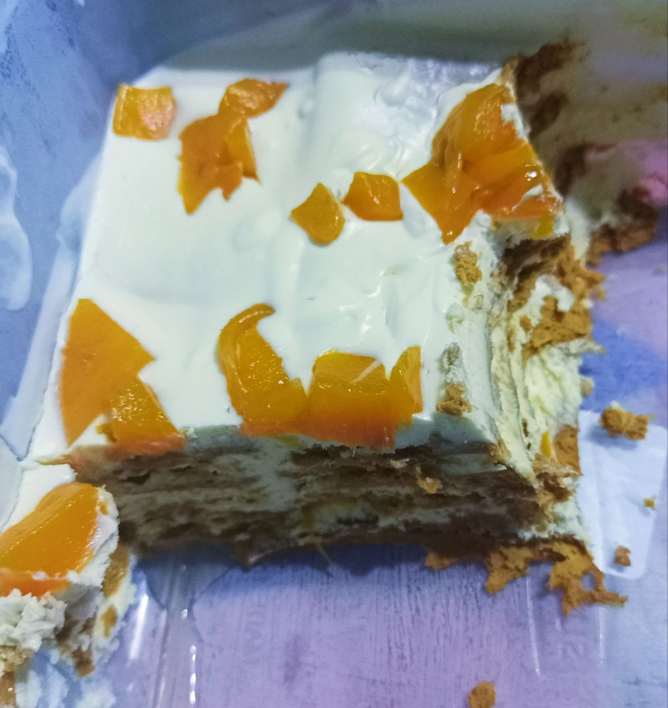

The Recipe of My Favorite Dish:
Mango Graham or Crema de Mangga

Ingredients
- 2pc 210g Graham Crackers
- 2 Nestle All Purpose Cream
- Finely Chopped Bits of Mango
- 210g Crushed Graham Cracker
- Any Condensed Milk
Directions
- Put the All Pupose Cream in A Glass Bowl, Whip the cream until it thickened.
- After the cream thickened put some condensed milk and mix.
- Now put one layer of the graham crackers in your desire container.
- Follow up the whipped cream or the whipped all purpose cream and repeat the same process and sprinkle some mango chopped bits after the cream layer.
- Serve the Mango Graham with a sprinkled crushed mango graham and chopped mango on top.